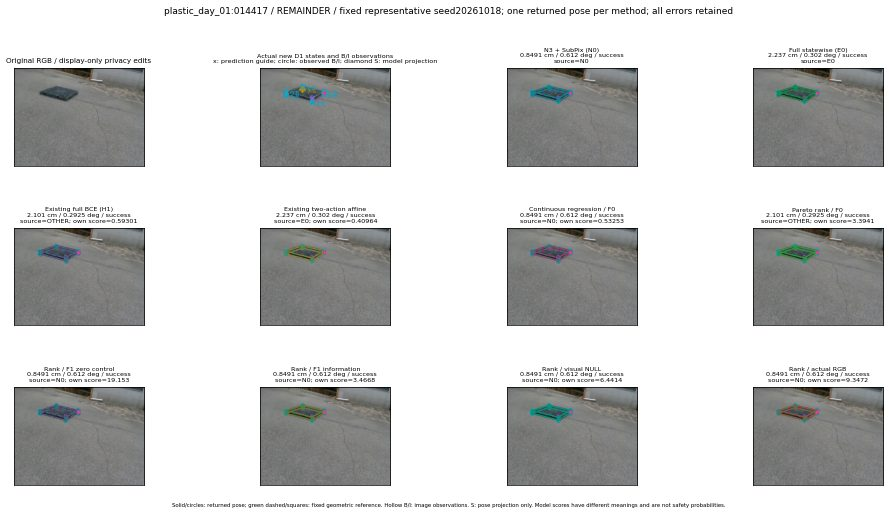

실선은 반환 자세, 초록 점선은 고정 기하 참조입니다. S는 영상 관측이 아닙니다. 점수는 모델별 의미가 다르며 보정된 안전 확률이 아닙니다. 개인정보 처리는 표시 사본에만 적용했습니다.
| 방법·seed | 위치 / 회전 / 공동성공 | 실제 출처 | 선택 후보 | 각 모델 자체 점수 |
|---|---|---|---|---|
| N0 | 0.8491 cm / 0.612 deg / success | N0 | N/A | N/A |
| E0 | 2.237 cm / 0.302 deg / success | E0 | N/A | N/A |
| E0_REGENERATED | 2.237 cm / 0.302 deg / success | E0 | E0_REGENERATED | N/A |
| POSEFIX_SUBPIX_PF_ANCHOR | 1.029 cm / 0.6192 deg / success | OTHER | N/A | N/A |
| POSEFIX_SUBPIX_YOLO_ANCHOR | 1.029 cm / 0.6192 deg / success | OTHER | N/A | N/A |
| D1_H1_MLP_s20261018 | 2.101 cm / 0.2925 deg / success | OTHER | G10/ORIGINAL_WD/selected | 0.5930109024047852 |
| D1_H1_MLP_s20261019 | 2.101 cm / 0.2925 deg / success | OTHER | G10/ORIGINAL_WD/selected | 0.5312334895133972 |
| D1_H1_MLP_s20261020 | 2.101 cm / 0.2925 deg / success | OTHER | G10/ORIGINAL_WD/selected | 0.203579843044281 |
| D1_H1_PAIR_MLP_s20261018 | 0.8491 cm / 0.612 deg / success | N0 | N0 | -0.26047593355178833 |
| D1_H1_PAIR_MLP_s20261019 | 0.8491 cm / 0.612 deg / success | N0 | N0 | -0.18396680057048798 |
| D1_H1_PAIR_MLP_s20261020 | 0.8491 cm / 0.612 deg / success | N0 | N0 | 0.24869030714035034 |
| D1_H1_PAIR_ROLE_AFFINE_s20261018 | 2.237 cm / 0.302 deg / success | E0 | E0_REGENERATED | 0.4096353054046631 |
| D1_H1_PAIR_ROLE_AFFINE_s20261019 | 2.237 cm / 0.302 deg / success | E0 | E0_REGENERATED | 0.28278639912605286 |
| D1_H1_PAIR_ROLE_AFFINE_s20261020 | 2.237 cm / 0.302 deg / success | E0 | E0_REGENERATED | 0.2341914176940918 |
| R_CONT_F0_s20261018 | 0.8491 cm / 0.612 deg / success | N0 | N0 | 0.5325303077697754 |
| R_CONT_F0_s20261019 | 0.8491 cm / 0.612 deg / success | N0 | N0 | 0.5098544359207153 |
| R_CONT_F0_s20261020 | 0.8491 cm / 0.612 deg / success | N0 | N0 | 0.6090125441551208 |
| R_ORDER_F0_s20261018 | 2.101 cm / 0.2925 deg / success | OTHER | G10/ORIGINAL_WD/selected | 3.394063949584961 |
| R_ORDER_F0_s20261019 | 0.8491 cm / 0.612 deg / success | N0 | N0 | 5.024639129638672 |
| R_ORDER_F0_s20261020 | 0.8491 cm / 0.612 deg / success | N0 | N0 | 4.469618797302246 |
| R_ORDER_F1_ZERO_s20261018 | 0.8491 cm / 0.612 deg / success | N0 | N0 | 19.15329933166504 |
| R_ORDER_F1_ZERO_s20261019 | 2.101 cm / 0.2925 deg / success | OTHER | G10/ORIGINAL_WD/selected | 11.474302291870117 |
| R_ORDER_F1_ZERO_s20261020 | 0.8491 cm / 0.612 deg / success | N0 | N0 | 9.822206497192383 |
| R_ORDER_F1_s20261018 | 0.8491 cm / 0.612 deg / success | N0 | N0 | 3.466801166534424 |
| R_ORDER_F1_s20261019 | 0.8491 cm / 0.612 deg / success | N0 | N0 | 8.936565399169922 |
| R_ORDER_F1_s20261020 | 0.8491 cm / 0.612 deg / success | N0 | N0 | 4.80947732925415 |
| V_ORDER_NULL_s20261018 | 0.8491 cm / 0.612 deg / success | N0 | N0 | 6.44135856628418 |
| V_ORDER_NULL_s20261019 | 0.8491 cm / 0.612 deg / success | N0 | N0 | 4.415218830108643 |
| V_ORDER_NULL_s20261020 | 0.8491 cm / 0.612 deg / success | N0 | N0 | 5.044387340545654 |
| V_ORDER_RGB_s20261018 | 0.8491 cm / 0.612 deg / success | N0 | N0 | 9.347195625305176 |
| V_ORDER_RGB_s20261019 | 0.8491 cm / 0.612 deg / success | N0 | N0 | 4.208459377288818 |
| V_ORDER_RGB_s20261020 | 0.8491 cm / 0.612 deg / success | N0 | N0 | -2.3026235103607178 |